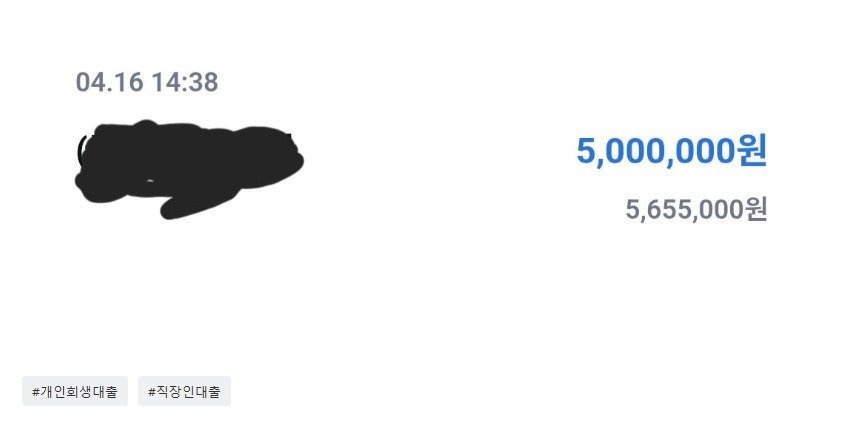

[개인회생자대출] 조영우 이사님과의 대출후기
운동기구제조업/4년2개월(정직원)/월340/3군데 대출 2600만원/개인회생 36회차중 19회 납입완료(연체없음)
최근 대출 받은지 3개월밖에 되지 않아 불안한 마음을 가지고 문의를 드렸는데 조영우 이사님께서 친절하게 설명해주시고 꼼꼼히 체크 해주셔서 추가 대출을 받을수 있었습니다.

https://cafe.naver.com/cityman88/310826운동기구제조업/4년2개월(정직원)/월340/3군데 대출 2600만원/개인회생 36회차중 19회 납입완료(연체없음)
최근 대출 받은지 3개월밖에 되지 않아 불안한 마음을 가지고 문의를 드렸는데 조영우 이사님께서 친절하게 설명해주시고 꼼꼼히 체크 해주셔서 추가 대출을 받을수 있었습니다.

https://cafe.naver.com/cityman88/310826